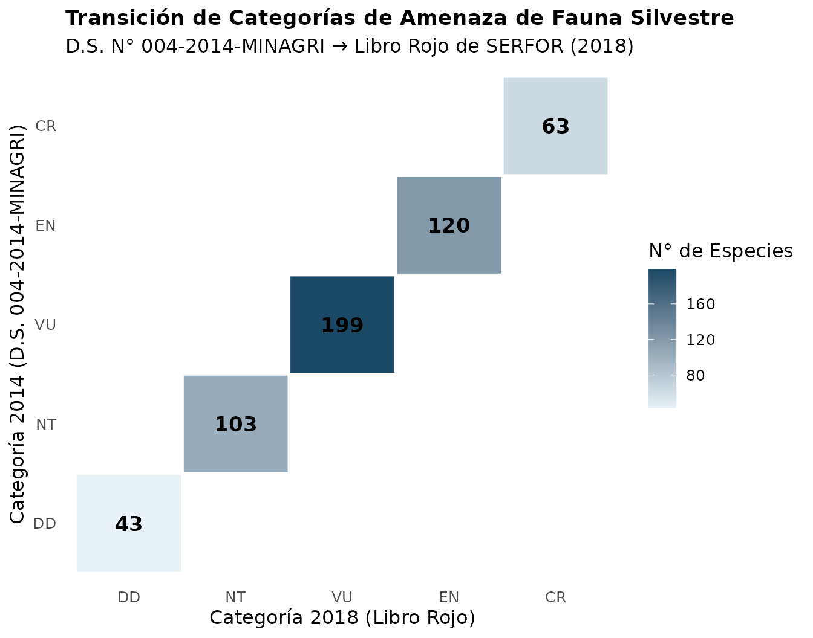
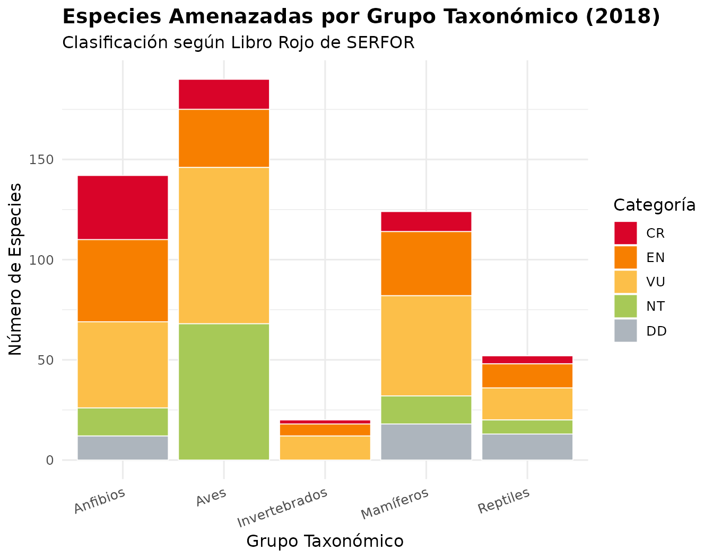

Comparación de Listas de Fauna Amenazada del Perú (2014 vs. 2018)
Source:vignettes/comparacion_fauna_2014_2018.Rmd
comparacion_fauna_2014_2018.RmdIntroducción
En el Perú, la gestión y conservación de la fauna silvestre legalmente protegida se fundamenta en listas oficiales aprobadas por el Estado:
- Decreto Supremo N° 004-2014-MINAGRI: Aprueba la actualización de la lista de clasificación y categorización de las especies amenazadas de fauna silvestre legalmente protegidas, con un total de 535 taxones categorizados en Peligro Crítico (CR), En Peligro (EN), Vulnerable (VU), Casi Amenazado (NT) y Datos Insuficientes (DD).
- Libro Rojo de la Fauna Silvestre Amenazada del Perú (SERFOR, 2018): Publicación técnica y científica elaborada por el Servicio Nacional Forestal y de Fauna Silvestre (SERFOR), que recopila y evalúa 528 taxones amenazados y describe fichas técnicas detalladas de conservación.
El objetivo de esta viñeta es realizar una evaluación exhaustiva de los cambios entre ambas bases de datos: - Coincidencias: Identificación de taxones concordantes por nombre científico válido o por sinonimia/cambio taxonómico. - Transición de categorías: Evaluación del sentido del cambio (ascenso a mayor amenaza, descenso a menor amenaza o estabilidad). - Especies retiradas: Taxones presentes en el D.S. N° 004-2014 que ya no figuran en el Libro Rojo 2018. - Especies nuevas: Taxones incorporados en 2018 no contemplados en 2014. - Matriz de transición y balances: Tablas cruzadas globales y por grupo taxonómico, con visualizaciones y exportación.
1. Paquetes y Configuración
Cargamos las librerías necesarias para el procesamiento, manipulación relacional y visualización de datos:
if (requireNamespace("perufaunads004", quietly = TRUE)) {
library(perufaunads004)
}
library(dplyr)
library(tidyr)
library(purrr)
library(stringr)
library(ggplot2)
library(knitr)
# Paquetes opcionales para lectura y exportación
# library(readxl)
# library(writexl)2. Funciones Auxiliares
Para comparar nombres biológicos entre diferentes fuentes documentales, es indispensable estandarizar la nomenclatura y definir una jerarquía cuantitativa para las categorías de amenaza de la UICN:
# 1. Normaliza un nombre científico:
# - Elimina comillas, paréntesis y nombres comunes incrustados
# - Remueve autorías y epítetos informales ("sp.", "ssp.", "cf.", "aff.")
# - Convierte a minúsculas, elimina diacríticos/tildes y extrae solo Género + epíteto (binomio)
normalizar_nombre <- function(x) {
x |>
as.character() |>
str_replace_all('["“”\']', " ") |>
str_replace_all("\\(.*?\\)", " ") |>
str_replace_all("\\b(sp|spp|ssp|subsp|cf|aff|var)\\.?\\b", " ") |>
str_replace_all("[^A-Za-zÁÉÍÓÚÜÑáéíóúüñ ]", " ") |>
str_squish() |>
str_to_lower() |>
stringi::stri_trans_general("Latin-ASCII") |>
word(1, 2)
}
# 2. Descompone y normaliza múltiples sinónimos (separados por ';', '/' o ',')
separar_sinonimos <- function(x) {
x |>
as.character() |>
str_replace_all("[()]", " ") |>
str_split("[;,/]") |>
map(~ .x |> normalizar_nombre() |> discard(~ is.na(.x) | .x == ""))
}
# 3. Escala ordinal de severidad de amenaza (de menor a mayor gravedad)
niveles_cat <- c("DD", "NT", "VU", "EN", "CR")
severidad <- function(x) match(x, niveles_cat)3. Preparación y Estandarización de las Bases
Podemos utilizar directamente los datasets curados incluidos en el
paquete perufaunads004 (ds004_fauna y
libro_rojo_especies) o, alternativamente, cargar los
archivos .xlsx originales con
readxl::read_excel().
# Carga de datos integrados (con fallback para entorno de desarrollo local)
if (exists("ds004_fauna") && exists("libro_rojo_especies")) {
# ya en memoria
} else if (requireNamespace("perufaunads004", quietly = TRUE)) {
data("ds004_fauna", package = "perufaunads004")
data("libro_rojo_especies", package = "perufaunads004")
} else if (file.exists("../data/ds004_fauna.rda")) {
load("../data/ds004_fauna.rda")
load("../data/libro_rojo_especies.rda")
} else if (file.exists("data/ds004_fauna.rda")) {
load("data/ds004_fauna.rda")
load("data/libro_rojo_especies.rda")
}
#> NULL
# Estandarización de la Lista 2014 (DS 004-2014-MINAGRI)
lista_2014 <- ds004_fauna |>
transmute(
id_2014 = ds004_id,
cat_2014 = as.character(ds004_categoria_codigo),
categoria_2014 = str_to_sentence(str_remove(ds004_categoria, "\\s*\\(.*\\)")),
grupo_2014 = str_to_sentence(clase),
nombre_2014 = str_squish(scientific_name),
comun_2014 = common_name,
sinonimo_2014 = synonym_scientific_name,
observacion = observacion,
key = normalizar_nombre(scientific_name),
key_sin = separar_sinonimos(synonym_scientific_name)
)
# Estandarización de la Lista 2018 (Libro Rojo de SERFOR)
lista_2018 <- libro_rojo_especies |>
transmute(
id_2018 = libro_rojo_id,
cat_2018 = as.character(libro_rojo_codigo),
categoria_2018 = str_squish(libro_rojo_categoria),
grupo_2018 = str_squish(grupo_taxonomico),
nombre_2018 = str_squish(scientific_name),
sinonimo_2018 = sinonimo,
key = normalizar_nombre(scientific_name),
key_sin = separar_sinonimos(sinonimo)
)
# Verificación de calidad: claves duplicadas dentro de cada lista
dup_2014 <- lista_2014 |> count(key) |> filter(n > 1)
dup_2018 <- lista_2018 |> count(key) |> filter(n > 1)
tibble(
Lista = c("2014 (DS 004)", "2018 (Libro Rojo)"),
`Total Registros` = c(nrow(lista_2014), nrow(lista_2018)),
`Claves Duplicadas` = c(nrow(dup_2014), nrow(dup_2018))
) |> kable(caption = "Control de integridad de registros y claves.")| Lista | Total Registros | Claves Duplicadas |
|---|---|---|
| 2014 (DS 004) | 535 | 0 |
| 2018 (Libro Rojo) | 528 | 0 |
4. Emparejamiento Jerárquico: Binomio y Sinónimos
El emparejamiento se ejecuta en dos fases consecutivas: 1.
Paso A (Directo): Cruce exacto por nombre binomial
normalizado (key). 2. Paso B (Cruzado por
sinónimos): Para las especies que no emparejaron en el Paso A,
se genera una tabla puente buscando equivalencias entre los sinónimos
registrados en cualquiera de las dos listas (por ejemplo, Oreonax
flavicauda en 2014 frente a Lagothrix flavicauda en
2018).
# Paso A: Emparejamiento directo por binomio aceptado
directo <- inner_join(
lista_2014 |> select(-key_sin),
lista_2018 |> select(-key_sin),
by = "key"
) |>
mutate(tipo_match = "nombre aceptado")
# Registros pendientes de emparejamiento
pend_2014 <- lista_2014 |> filter(!key %in% directo$key)
pend_2018 <- lista_2018 |> filter(!key %in% directo$key)
# Tablas largas de sinónimos de especies pendientes
sin_2014 <- pend_2014 |>
select(key, key_sin) |>
unnest_longer(key_sin, values_to = "key_alt") |>
filter(!is.na(key_alt))
sin_2018 <- pend_2018 |>
select(key, key_sin) |>
unnest_longer(key_sin, values_to = "key_alt") |>
filter(!is.na(key_alt))
# Construcción de puente relacional:
# sinónimo 2018 -> nombre 2014 | sinónimo 2014 -> nombre 2018
puente <- bind_rows(
sin_2018 |> transmute(key_2014 = key_alt, key_2018 = key),
sin_2014 |> transmute(key_2014 = key, key_2018 = key_alt)
) |>
filter(key_2014 %in% pend_2014$key, key_2018 %in% pend_2018$key) |>
distinct()
por_sinonimo <- puente |>
left_join(pend_2014 |> select(-key_sin), by = c("key_2014" = "key")) |>
left_join(pend_2018 |> select(-key_sin), by = c("key_2018" = "key")) |>
mutate(key = key_2014, tipo_match = "sinónimo / cambio taxonómico") |>
select(-key_2014, -key_2018)
# Consolidación final de coincidencias
coincidencias <- bind_rows(directo, por_sinonimo) |>
mutate(
cambio = case_when(
cat_2014 == cat_2018 ~ "sin cambio",
severidad(cat_2018) > severidad(cat_2014) ~ "asciende (mayor amenaza)",
severidad(cat_2018) < severidad(cat_2014) ~ "desciende (menor amenaza)",
TRUE ~ "no comparable"
),
transicion = paste(cat_2014, "->", cat_2018)
) |>
arrange(grupo_2014, nombre_2014)Detalle de Coincidencias por Sinonimia
por_sinonimo |>
select(nombre_2014, nombre_2018, grupo_2014, cat_2014, cat_2018, tipo_match) |>
kable(caption = "Especies emparejadas mediante sinonimia o reasignación taxonómica.")| nombre_2014 | nombre_2018 | grupo_2014 | cat_2014 | cat_2018 | tipo_match |
|---|---|---|---|---|---|
| Oreonax flavicauda | Lagothrix flavicauda | Mamíferos | CR | CR | sinónimo / cambio taxonómico |
5. Especies Retiradas (Salidas de 2014) y Nuevas (Entradas en 2018)
Identificamos los taxones del D.S. N° 004-2014 que ya no forman parte de la lista evaluada en el Libro Rojo 2018, así como cualquier especie nueva incorporada:
emparejadas_2014 <- coincidencias$id_2014
emparejadas_2018 <- coincidencias$id_2018
# Especies de 2014 que no figuran en 2018 (7 especies)
especies_retiradas <- lista_2014 |>
filter(!id_2014 %in% emparejadas_2014) |>
select(id_2014, nombre_2014, comun_2014, grupo_2014, cat_2014,
categoria_2014, sinonimo_2014, observacion)
# Especies incorporadas exclusivamente en 2018
especies_nuevas <- lista_2018 |>
filter(!id_2018 %in% emparejadas_2018) |>
select(id_2018, nombre_2018, grupo_2018, cat_2018, categoria_2018, sinonimo_2018)Taxones Retirados del Listado 2018
especies_retiradas |>
select(id_2014, nombre_2014, grupo_2014, cat_2014, sinonimo_2014, observacion) |>
kable(caption = "Especies del D.S. 004-2014 no incluidas en el Libro Rojo 2018.")| id_2014 | nombre_2014 | grupo_2014 | cat_2014 | sinonimo_2014 | observacion |
|---|---|---|---|---|---|
| 35 | Telmatobius timens | Anfibios | CR | NA | NA |
| 66 | Bostryx aguilari | Invertebrados | EN | NA | NA |
| 87 | Hyloxalus elachyistus | Anfibios | EN | Colostethus elachyistus | NA |
| 187 | Argia inculta | Invertebrados | VU | NA | NA |
| 188 | Bostryx scalariformis | Invertebrados | VU | NA | NA |
| 235 | Psychrophrynella wettsteini | Anfibios | VU | NA | NA |
| 242 | Telmatobius jelskii | Anfibios | VU | NA | NA |
Nota Biológica y de Conservación: Se identifican 7 especies retiradas pertenecientes a Anfibios (4 especies: Telmatobius timens, Hyloxalus elachyistus, Psychrophrynella wettsteini, Telmatobius jelskii) e Invertebrados (3 especies: Bostryx aguilari, Argia inculta, Bostryx scalariformis), reflejando actualizaciones en el estado del conocimiento y reconsideración de criterios de evaluación entre 2014 y 2018.
6. Resúmenes Estadísticos y Matriz de Transición
Indicadores Generales de Comparación
resumen_general <- tibble(
Indicador = c(
"Registros D.S. 004-2014",
"Registros Libro Rojo 2018",
"Coincidencias totales",
" - Coincidencia directa (nombre aceptado)",
" - Coincidencia por sinónimo / cambio taxonómico",
"Sin cambio de categoría de amenaza",
"Ascienden de categoría (mayor amenaza)",
"Descienden de categoría (menor amenaza)",
"Especies retiradas (solo 2014)",
"Especies nuevas (solo 2018)"
),
`N° Especies` = c(
nrow(lista_2014),
nrow(lista_2018),
nrow(coincidencias),
sum(coincidencias$tipo_match == "nombre aceptado"),
sum(coincidencias$tipo_match == "sinónimo / cambio taxonómico"),
sum(coincidencias$cambio == "sin cambio"),
sum(coincidencias$cambio == "asciende (mayor amenaza)"),
sum(coincidencias$cambio == "desciende (menor amenaza)"),
nrow(especies_retiradas),
nrow(especies_nuevas)
)
)
resumen_general |>
kable(caption = "Resumen cuantitativo global de la comparación entre 2014 y 2018.")| Indicador | N° Especies |
|---|---|
| Registros D.S. 004-2014 | 535 |
| Registros Libro Rojo 2018 | 528 |
| Coincidencias totales | 528 |
| - Coincidencia directa (nombre aceptado) | 527 |
| - Coincidencia por sinónimo / cambio taxonómico | 1 |
| Sin cambio de categoría de amenaza | 528 |
| Ascienden de categoría (mayor amenaza) | 0 |
| Descienden de categoría (menor amenaza) | 0 |
| Especies retiradas (solo 2014) | 7 |
| Especies nuevas (solo 2018) | 0 |
Matriz de Transición de Categorías (2014 vs. 2018)
La matriz cruza las categorías del D.S. N° 004-2014 (filas) con las del Libro Rojo 2018 (columnas):
matriz_transicion <- coincidencias |>
mutate(
cat_2014 = factor(cat_2014, levels = rev(niveles_cat)),
cat_2018 = factor(cat_2018, levels = rev(niveles_cat))
) |>
count(cat_2014, cat_2018) |>
pivot_wider(names_from = cat_2018, values_from = n, values_fill = 0) |>
arrange(cat_2014)
matriz_transicion |>
kable(caption = "Matriz de transición: Categoría 2014 (filas) vs. Categoría 2018 (columnas).")| cat_2014 | CR | EN | VU | NT | DD |
|---|---|---|---|---|---|
| CR | 63 | 0 | 0 | 0 | 0 |
| EN | 0 | 120 | 0 | 0 | 0 |
| VU | 0 | 0 | 199 | 0 | 0 |
| NT | 0 | 0 | 0 | 103 | 0 |
| DD | 0 | 0 | 0 | 0 | 43 |
Distribución por Grupo Taxonómico
balance_grupo <- coincidencias |>
count(Grupo = grupo_2018, Categoría = cat_2018) |>
pivot_wider(names_from = Categoría, values_from = n, values_fill = 0) |>
arrange(Grupo)
balance_grupo |>
kable(caption = "Distribución de especies categorizadas por grupo taxonómico en 2018.")| Grupo | CR | DD | EN | NT | VU |
|---|---|---|---|---|---|
| Anfibios | 32 | 12 | 41 | 14 | 43 |
| Aves | 15 | 0 | 29 | 68 | 78 |
| Invertebrados | 2 | 0 | 6 | 0 | 12 |
| Mamíferos | 10 | 18 | 32 | 14 | 50 |
| Reptiles | 4 | 13 | 12 | 7 | 16 |
7. Visualizaciones
Heatmap de la Matriz de Transición
p_transicion <- coincidencias |>
count(cat_2014, cat_2018) |>
mutate(
cat_2014 = factor(cat_2014, levels = niveles_cat),
cat_2018 = factor(cat_2018, levels = niveles_cat)
) |>
ggplot(aes(x = cat_2018, y = cat_2014, fill = n)) +
geom_tile(color = "white", linewidth = 0.8) +
geom_text(aes(label = n), fontface = "bold", size = 4.5, color = "black") +
scale_fill_gradient(low = "#e8f1f5", high = "#1b4965") +
labs(
title = "Transición de Categorías de Amenaza de Fauna Silvestre",
subtitle = "D.S. N° 004-2014-MINAGRI → Libro Rojo de SERFOR (2018)",
x = "Categoría 2018 (Libro Rojo)",
y = "Categoría 2014 (D.S. 004-2014-MINAGRI)",
fill = "N° de Especies"
) +
theme_minimal(base_size = 12) +
theme(
plot.title = element_text(face = "bold", size = 13),
panel.grid = element_blank(),
legend.position = "right"
)
print(p_transicion)
Distribución de Amenaza por Grupo Taxonómico
colores_uicn <- c(
"CR" = "#d90429",
"EN" = "#f77f00",
"VU" = "#fcbf49",
"NT" = "#a7c957",
"DD" = "#adb5bd"
)
p_grupos <- coincidencias |>
mutate(
cat_2018 = factor(cat_2018, levels = c("CR", "EN", "VU", "NT", "DD"))
) |>
ggplot(aes(x = grupo_2018, fill = cat_2018)) +
geom_bar(position = "stack", color = "white", linewidth = 0.3) +
scale_fill_manual(values = colores_uicn) +
labs(
title = "Especies Amenazadas por Grupo Taxonómico (2018)",
subtitle = "Clasificación según Libro Rojo de SERFOR",
x = "Grupo Taxonómico",
y = "Número de Especies",
fill = "Categoría"
) +
theme_minimal(base_size = 12) +
theme(
plot.title = element_text(face = "bold"),
axis.text.x = element_text(angle = 20, hjust = 1)
)
print(p_grupos)
8. Exportación de Resultados (Opcional)
Si se desea exportar las tablas consolidadas y las figuras generadas
para reportes externos, se puede emplear el paquete writexl
y la función ggsave() de ggplot2:
# Exportación de hojas de cálculo con writexl:
writexl::write_xlsx(
list(
resumen_general = resumen_general,
coincidencias = coincidencias |> select(-starts_with("key")),
especies_retiradas = especies_retiradas,
especies_nuevas = especies_nuevas,
matriz_transicion = matriz_transicion,
balance_por_grupo = balance_grupo
),
path = "comparacion_fauna_2014_2018.xlsx"
)
# Guardar figura en alta resolución (300 DPI):
ggsave(
filename = "matriz_transicion_2014_2018.png",
plot = p_transicion,
width = 7,
height = 5.5,
dpi = 300
)9. Conclusiones
- Alta Concordancia Taxonómica: 528 de las 535 especies del D.S. N° 004-2014 (98.7 %) coinciden con la lista del Libro Rojo 2018, con 527 coincidencias directas y 1 resolución sinonímica (Oreonax flavicauda = Lagothrix flavicauda).
- Retiro de Taxones: 7 especies del decreto de 2014 no fueron incluidas en el Libro Rojo de 2018 (4 anfibios y 3 invertebrados).
- Consistencia de Categorías: Las 528 especies evaluadas mantuvieron su categoría oficial de amenaza entre ambos instrumentos.
-
Reproducibilidad en
perufaunads004: La integración de las funciones de normalización y los datos estructurados en el paquete facilita el monitoreo continuo ante futuras actualizaciones normativas de la fauna silvestre amenazada en el Perú.